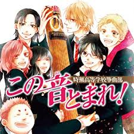
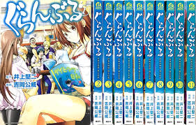
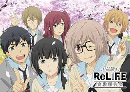

まじで面白い！個人的オススメ漫画！【青春】編
[このページは個人的にオススメな漫画をジャンル別に紹介するページです]
漫画1「この音とまれ」

アミューによる漫画作品。この作品は、和楽器の一つである箏をテーマとした学園青春漫画。
廃部寸前、部員一人の箏曲部に入部した久遠愛。仲間を集め全国大会優勝を目指し奮闘する青春漫画。
コメント…箏に触れ心を成長させていく主人公。独特の策がえ圧倒する瞬間は鳥肌もの！中盤は涙で字が読めないほど…。
もちろん恋愛も絡んで来るかも？♡箏に興味をもてるとてもいい作品です。
感動★★★★☆
和風★★★★★
恋愛★★★★☆
漫画2「ぐらんぶる」

原作：井上賢二、作画：吉岡公威による漫画作品。大学進学を機に叔父のもとへ下宿することになった主人公。
美女のいとこ、友人、入会したダイビングサークルのメンバーとともに面白おかしい大学生活を描いた漫画。
コメント…個性的なキャラクターと繰り広げられるギャグはお腹が痛いほど笑える！実写映画化もされた超オススメ青春ギャグマンガ。
少しだけ恋愛要素もあったりなかったり…???
ギャグ★★★★★
お酒★★★★★
ダイビング★★★★☆
漫画3「ReLIFE」

夜宵草による漫画作品。前職を3か月で退職し、求職中の主人公、海崎新太。社会復帰の実験としてリライフを受け高校生としてやり直す学園物語。
コメント…色々な性格のクラスメイトと過ごす日常。「いずれは消えてしまう想いでも悲しい顔をさせるよりはいい━」
今を全力で生きる主人公たちに感動する!!
高校生★★★★☆
人生★★★★★
想い★★★★★